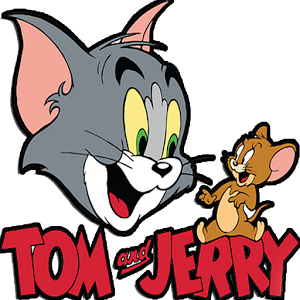

Tom and Jerry
Watch - Genres : Cartoon, Comedy
- Actor : Tom Kenny, Rick Zieff, Gary Cole
- Director : Joseph Barbera, William Hanna
- Country : USA
- Movie : Tom and Jerry
- Duration : 163 episods
- Release : 1940
Description:
Tom and Jerry is an American animated series of short films created in 1940, by William Hanna and Joseph Barbera. It centers on a rivalry between its two main characters, Tom Cat and Jerry Mouse, and many recurring characters, based around slapstick comedy. In its original run, Hanna and Barbera produced 114 Tom and Jerry shorts for Metro-Goldwyn-Mayer from 1940 to 1957. During this time, they won seven Academy Awards for Animated Short Film, tying for first place with Walt Disney's Silly Symphonies with the most awards in the category. After the MGM cartoon studio closed in 1957, MGM revived the series with Gene Deitch directing an additional 13 Tom and Jerry shorts for Rembrandt Film...